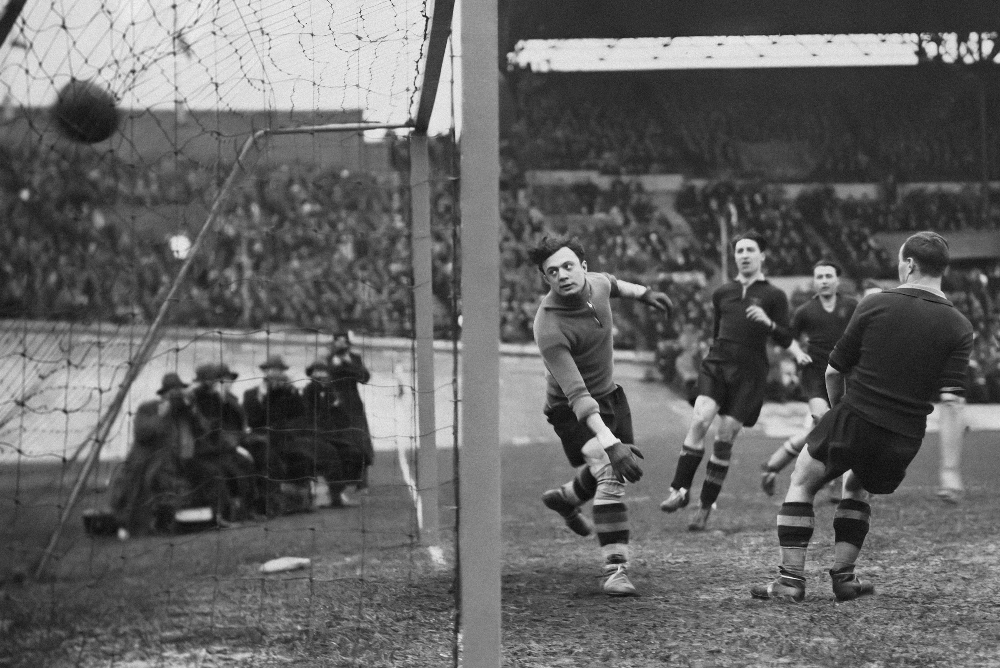
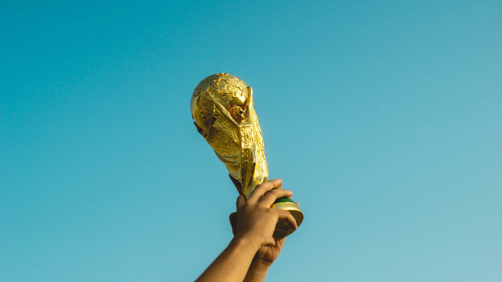

Soccer was formalized in England in the year 1863, and since then it has become the biggest sport in the world. "The beautiful sport" as some may call it, has now spread to almost every nation in the world, with most nations having its own league.

The sport became so big that every four years a total of 32 national teams (48 in 2026), seek to be world champions and conquer the World Cup. Each time a different country or sometimes 2–3 countries host the World Cup. This brings a lot of tourism, economic boost, and cultural mix to the hosting country or countries.

Although every four years nations play to be world champions, there are a select few that have won the title. Some nations have even won it multiple times. The list below shows nations that have won the World Cup and how many times.
You can see the road to their championships here: FIFA World Cup Champions
| Nation | World Cups Won |
|---|---|
| Brazil | 5 |
| Germany | 4 |
| Italy | 3 |
| Argentina | 3 |
| Uruguay | 2 |
| France | 2 |
| England | 1 |
| Spain | 1 |